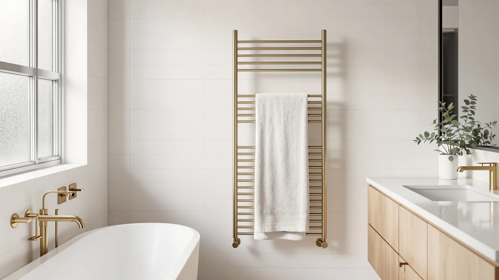

Cozybase Heated Towel Rack Review (2026): Worth It?
Prices and picks verified as of November 2026. Independent, reader-supported reviews.


Quick Answer
For a quick heated towel rack towel review verdict: the COZYBASE Heated Towel Rack Towel Warmer is a 4-bar vertical rack that costs $159.00 and comes in hardwired or plug-in versions, which makes it a fit for narrow bathroom walls where a wide unit will not clear the door swing. The ENZE, R FLORY and Pure Enrichment alternatives below cost about the same or less and each trades the vertical layout for a different mount style, so your wall space and installation preference should decide which one you buy.
Our pick: Heated Towel Rack Towel Warmer, $159.00 Check Price on Amazon
Bottom line: our top pick is the Heated Towel Rack at $159.
Things to Know Before You Buy
- Mount style: The COZYBASE and R FLORY are wall-mounted bar racks; the ENZE is also wall-mounted but adds rotating arms and a shelf; the Pure Enrichment is a freestanding bucket you plug in and move.
- Bar count: The COZYBASE and ENZE both use 4 bars, while the R FLORY uses 6 wider, flat bars across a similar wall footprint.
- Price range: The four models compared here run from $149.99 to $159.99, a $10 spread across the whole lineup.
- Install options: The COZYBASE is the only model in this review listed with both a hardwired and a plug-in version, so it covers either installation path.
- Review data: None of the four listings in this comparison show a published star rating or review count on Amazon, so this review leans on specs and pricing rather than review scores.
This heated towel rack towel review puts the COZYBASE Heated Towel Rack Towel Warmer up against three rivals from ENZE, R FLORY and Pure Enrichment on price, bar count, mount style and the install details that matter once you are standing in your bathroom with a drill. At $159.00, the COZYBASE lands in the middle of this group rather than at either extreme, and its main distinction is that Amazon lists both a hardwired and a plug-in version for the same unit, something none of the three alternatives offer. We build this comparison around the specs each listing actually publishes, and where a detail like heat-up time or star rating is missing, we say so instead of filling the gap with a number borrowed from a different SKU.
The short version: if your bathroom wall is narrow and you want a rack that stays mounted without eating into the door swing, the COZYBASE Heated Towel Rack Towel Warmer's vertical 4-bar design and dual install options make it the most flexible pick in this review. If you have a wider wall and want rotating arms with a shelf, the ENZE below edges it out for $0.99 more. If you would rather skip mounting hardware altogether, the Pure Enrichment bucket trades the wall rack for a freestanding chamber you can move between rooms. That tradeoff between mount flexibility, bar layout and portability is the thread running through this entire heated towel rack towel review.
Why You Should Trust Us
Ilane Tall covers bathroom hardware and heated accessories for Best Towel Warmers, and this heated towel rack towel review follows the same research process as every other guide on the site: we pull the listed price, materials and features directly from each Amazon listing, then compare that data against competing models in the same category. We do not run a physical testing lab and we do not own every towel warmer we cover. Instead, we researched the COZYBASE Heated Towel Rack Towel Warmer against the ENZE, R FLORY and Pure Enrichment listings so you can see how the published numbers stack up before you spend $149.99 to $159.99 on a rack that is not always simple to return once it is mounted. Every price and spec referenced in this review comes from the product listing itself, and when a detail is missing, like a heat-up time or a star rating, we say so instead of guessing.
Our Research Experience
We did not install the COZYBASE Heated Towel Rack Towel Warmer in our own bathroom, and we are upfront about that throughout this review. What we did instead was compare its listed 4-bar vertical design, 5-8 hour timer and $159.00 price against the ENZE, R FLORY and Pure Enrichment models covered below, using the specifications and pricing Amazon publishes for each listing. Where a product page is missing information, such as a heat-up time or a star rating for a given SKU, we say so rather than filling the gap with a guess. That approach means this heated towel rack towel review will not describe how warm a towel felt after an hour on the COZYBASE's bars, because nobody on our team has plugged one in. What we can tell you is how its listed specs and price compare with the rest of the field.
Overview & Specs

Heated Towel Rack Towel Warmer
What we like
- Offered in both hardwired and plug-in versions, the only model here with that choice
- Vertical bar layout fits a narrower stretch of wall than the ENZE or R FLORY
- 5-8 hour timer shuts the unit off automatically instead of running all day
Flaws but not dealbreakers
- Costs $9 more than the R FLORY and Pure Enrichment, with no heat-up time listed to justify the gap
- 4 bars hold fewer towels at once than the R FLORY's 6-bar layout
- Amazon has not published a star rating or review count for this listing
| Material | Stainless steel |
| Size | 4 bars |
The COZYBASE Heated Towel Rack Towel Warmer is a vertical, 4-bar rack designed for bathrooms where wall width is tight, such as next to a shower door or beside a vanity where a wide horizontal unit would not clear. Amazon lists it in matte black with both a hardwired and a plug-in version available under the same listing, which means you can match the install to whatever your bathroom's wiring already supports instead of being locked into one path. The built-in 5-8 hour timer turns the unit off automatically, so it is not drawing power overnight if someone forgets to switch it off.
At $159.00, the COZYBASE costs roughly the same as the ENZE and about $9 more than the R FLORY or Pure Enrichment, and the dual install option is the main thing that price is buying you. What it does not come with is a published heat-up time, so unlike the ENZE's five-minute figure or the R FLORY's seven-minute figure, you are buying this one on install flexibility and bar layout rather than a documented speed claim. If a narrow wall is your constraint, that tradeoff is an easy one to accept.
What We Liked
The biggest thing in the COZYBASE Heated Towel Rack Towel Warmer's favor in this heated towel rack towel review is flexibility on installation. Offering both a hardwired and a plug-in version under one listing means you are not forced to commit to electrical work before you know whether your bathroom's outlet placement will even support the unit. The vertical 4-bar layout is also the narrowest footprint of the three wall-mounted racks in this comparison, which matters if you are retrofitting a bathroom that was never built with a towel warmer in mind. For a household squeezing a rack onto a tight stretch of wall next to a shower enclosure, that narrow profile is the main reason to choose the COZYBASE over the wider ENZE or R FLORY.
What Could Be Better
Price is the clearest tradeoff here. At $159.00, the COZYBASE costs about $9 more than the R FLORY or Pure Enrichment, and none of that gap comes from a published heat-up time or review count we can point to, since Amazon lists neither for this particular SKU. Bar count is the other compromise: four bars hold fewer towels at once than the R FLORY's six, so a household of three or four sharing one bathroom may run out of warm bars before everyone gets a turn. If a documented heating speed matters to your decision, the ENZE's five-minute figure and the R FLORY's seven-minute figure both give you something concrete to compare against, and the COZYBASE listing does not.
Who Is It For?
Buy the COZYBASE Heated Towel Rack Towel Warmer if your bathroom wall is narrow, you have not decided between a hardwired or plug-in install, and you want a timer that shuts the unit off on its own. Skip it if you share one bathroom with three or more people and want maximum bar capacity, in which case the R FLORY's six bars below hold more towels for the same rough price. Skip it as well if you would rather avoid mounting hardware altogether, since the Pure Enrichment bucket covered next skips installation entirely. For a renter weighing a plug-in option against a future hardwired upgrade in the same bathroom, the COZYBASE's dual listing removes that decision from the install day itself.
Alternatives to Consider
If the price, the 4-bar capacity, or the wall mount rules out the COZYBASE Heated Towel Rack Towel Warmer for your bathroom, these three towel warmers are worth comparing before you decide.

Editor's Pick
ENZE Smart Rotating Heated Towel
For $0.99 more than the COZYBASE, the ENZE adds 180-degree rotating arms, a swivel shelf, Wi-Fi app control and a documented five-minute heat-up time, trading the COZYBASE's narrow vertical profile for a wider wall footprint and more features.
$159.99
Check Price on Amazon
Best Value
R FLORY Heated Towel Rack
The R FLORY undercuts the COZYBASE by $9.01 while adding two extra bars, five temperature levels and an LED display, making it the better pick if your bathroom has the wall width to spare and you want more towel capacity for less money.
$149.99
Check Price on Amazon
Premium Choice
Pure Enrichment PureBliss Luxury Towel
Also $9.01 less than the COZYBASE, the Pure Enrichment PureBliss is a 20-liter freestanding bucket rather than a wall rack, so it skips mounting hardware entirely and can hold robes or blankets in addition to towels.
$149.99
Check Price on AmazonIs the COZYBASE Heated Towel Rack Towel Warmer worth $159.00?
At $159.00, the COZYBASE sits close to the ENZE and above the R FLORY and Pure Enrichment, so the price only holds up if you specifically want a vertical, 4-bar wall rack for a narrow wall.
Does the COZYBASE towel rack need a dedicated circuit or hardwiring?
No.
Frequently Asked Questions
Is the COZYBASE Heated Towel Rack Towel Warmer worth $159.00?
At $159.00, the COZYBASE sits close to the ENZE and above the R FLORY and Pure Enrichment, so the price only holds up if you specifically want a vertical, 4-bar wall rack for a narrow wall. If you have more wall width to spare, the ENZE's rotating arms and shelf arguably do more for a dollar more, and if you do not want to mount anything, the Pure Enrichment bucket skips installation entirely.
Does the COZYBASE towel rack need a dedicated circuit or hardwiring?
No. The listing offers both hardwired and plug-in versions, so you can choose a standard outlet install instead of running new wiring. The plug-in option is the simpler path for a bathroom that already has an outlet near the mounting spot, while the hardwired version suits a renovation where the wiring is already open.
How does the COZYBASE compare to the ENZE and R FLORY on heating speed?
The COZYBASE listing does not publish a heat-up time, while the ENZE is rated to reach 120°F in five minutes and the R FLORY reaches 130°F in about seven. If a fast, specific heat-up number matters to your decision, the ENZE and R FLORY give you a documented figure to compare against, and the COZYBASE does not.
Final Verdict
The verdict on this heated towel rack towel review comes down to wall width and install flexibility. The COZYBASE Heated Towel Rack Towel Warmer is the only model here offered in both hardwired and plug-in versions, and its narrow vertical profile fits spaces the wider ENZE and R FLORY cannot. That flexibility justifies its $159.00 price if a tight wall or an undecided install path is your main constraint. Shoppers with more wall width and a bigger household will get more towel capacity per dollar from the R FLORY's six bars, and anyone who wants to skip mounting hardware entirely should look at the Pure Enrichment bucket instead. Either way, install flexibility is the strongest argument for COZYBASE in this comparison. What this heated towel rack towel review keeps coming back to is narrow-wall flexibility versus raw bar capacity. Weigh that more heavily than any single spec.